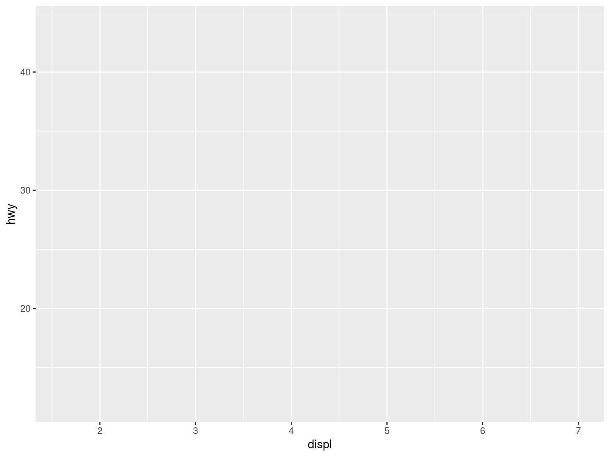
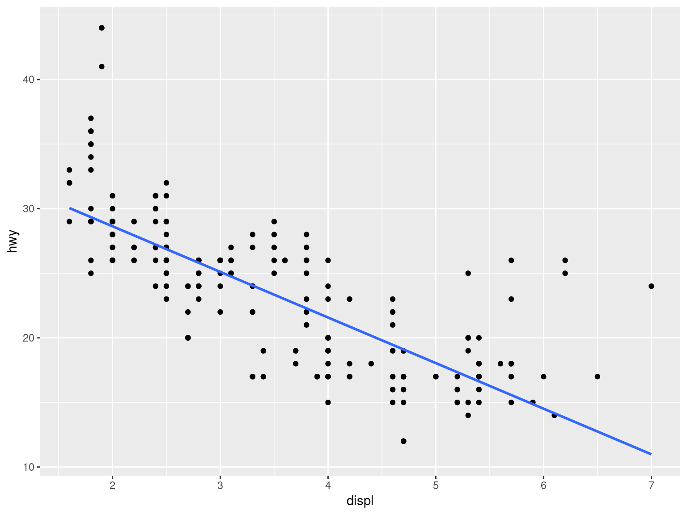

We looked at ways to analyze your data
… created more R Scripts
… and connected them to R Notebooks
Any questions or anything to add?
Who of you created an R Notebook to document your code?
Who of the team captains added their team members as collaborators to their GitHub repository?
.. added their team members as contributors to their research projects in OSF?
Any questions regarding last session’s homework?
ggplot()
ggplot(data = mpg)
ggplot(data = mpg, aes(x = displ, y = hwy))

ggplot(data = mpg, aes(x = displ, y = hwy)) + geom_point()
ggplot(data = mpg, aes(x = hwy)) + geom_histogram()
ggplot(data = mpg, aes(x = hwy)) + geom_freqpoly()
ggplot(data = mpg, aes(x = hwy)) + geom_density()
ggplot(data = mpg, aes(x = displ, y = hwy)) + geom_line()
ggplot(map_data("world"), aes(long, lat, group = group)) + geom_polygon()
dino <- datasaurus_dozen %>% filter(dataset == "dino") ggplot(dino, aes(x = x, y = y)) + geom_point(color = "red") + theme_void()
ggplot(data = mpg, aes(x = drv, y = hwy)) + geom_point()
ggplot(data = mpg, aes(x = drv, y = hwy)) + geom_jitter()
ggplot(data = mpg, aes(x = drv, y = hwy)) + geom_boxplot()
ggplot(data = mpg, aes(x = drv, y = hwy)) + geom_violin()
ggplot(data = mpg, aes(x = drv, y = hwy)) + ggbeeswarm::geom_beeswarm()
ggplot(data = mpg, aes(x = hwy)) + geom_histogram() + geom_freqpoly()
ggplot(data = mpg, aes(x = displ, y = hwy)) + geom_point() + geom_smooth(method = "lm", se = FALSE)

ggplot(data = mpg, aes(x = displ, y = hwy)) + geom_point() + geom_smooth(method = "lm", se = FALSE) + geom_smooth(method = "loess", se = TRUE)
ggplot(data = mpg, aes(x = drv, y = hwy)) + geom_violin() + geom_boxplot(width = 0.1)
ggplot(data = mpg, aes(x = displ, y = hwy)) + geom_point() + scale_x_continuous(limits = c(0, 10))
ggplot(data = mpg, aes(x = displ, y = hwy)) + geom_point() + labs(x = "Engine displacement", y = "Highway miles per gallon")
ggplot(data = mpg, aes(x = displ, y = hwy)) + geom_point() + scale_x_continuous(limits = c(0, 10), breaks = c(0:10))
ggplot(data = mpg, aes(x = displ, y = hwy)) + geom_point() + labs(title = "My Title")
ggplot(data = mpg, aes(x = displ, y = hwy, color = class)) + geom_point() + labs(color = "My Legend")
“Putting it all together”
Add graphics to your slides
Add graphics to your R Notebooks